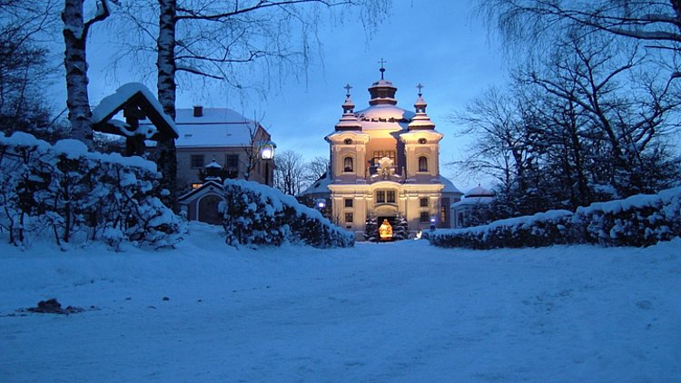
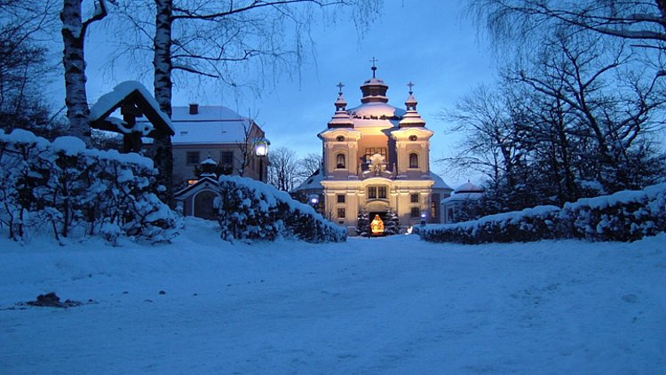

Steyr am Nationalpark – natürlich romantisch!
Steyr am Nationalpark, reich an Kultur, Industrie, Natur und Architektur ist eine lebens- und liebenswerte Kleinstadt. Die 1000-jährige Stadt liegt inmitten der Österreichischen Romantikstraße zwischen Salzburg und Wien und ist ein wahres Architekturjuwel. Am historischen Stadtplatz reihen sich Bürgerhäuser aus verschiedenen Stilepochen harmonisch aneinander. Malerisch ist der Zusammenfluss von Enns und Steyr unterhalb des Schlosses, die beiden Flüsse bestimmen seit Jahrhunderten die Entwicklung der Stadt. Erleben Sie das besondere Flair der Stadt Steyr und überzeugen Sie sich selbst von der harmonischen Symbiose zwischen traditionsreicher Vergangenheit und pulsierender Gegenwart!


In Steyr ist immer was los - entscheiden Sie sich für eine dieser Aktivitäten:
- Vom höchsten Turm in den tiefsten Keller
Begleiten Sie die Steyrer Nachtwächter auf Zeitreise in die Vergangenheit und lauschen Sie ihren Gschichtln und Anekdoten! - Steyr erschweben
Der Sprung vom Mittelalter ins Hightech-Zeitalter gelingt in Steyr mühelos beim lautlosen Schweben auf den Segways, den ultimativen Kult-Rollern! - Ein Eldorado für Naturliebhaber
In nur 30 Autominuten erreicht man das Besucherzentrum Ennstal, den idealen Ausgangspunkt für alle Touren in den Nationalpark Kalkalpen. - Advent in Steyr
In der Adventzeit verwandelt sich Steyr zu Österreichs offizieller Christkindlstadt. Das Postamt und die Wallfahrtskirche in Christkindl, das Steyrer Kripperl oder das Weihnachtsmuseum mit Erlebnisbahn sind nur einige der vorweihnachtlichen Attraktionen.

 
